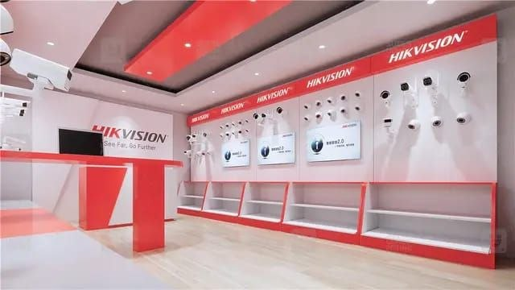

Service 08
Technical Training.
Practical, hands-on training that builds confidence in electrical and security-system work.

Learn skills you can apply.
Our practical sessions help individuals and teams understand electrical installations and security systems through clear demonstrations and supervised hands-on work.
What is included
- Hands-on electrical installation guidance
- Security-system setup and troubleshooting
- Practical safety and testing procedures